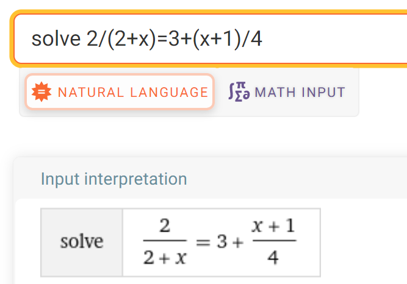
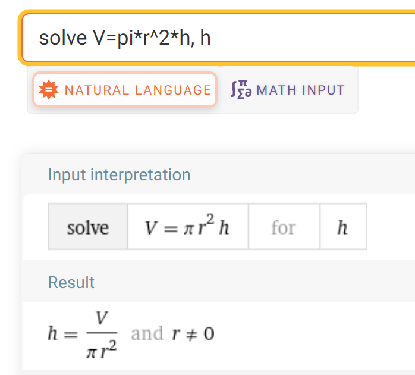

Yhtälöiden ratkaisu
Contents
Yhtälöiden ratkaisu#
Lähes kaikissa matematiikan ongelmissa päädytään yhtälöiden ratkaisuun. Yhtälön muodostaminen vaatii taitoa muuttaa sanallisessa muodossa esitettyjä ongelmia lausekkeiksi. Lausekkeita puolestaan muokataan potenssilukujen, juurien ja polynomien laskusäännöillä. Lausekkeista muodostuu yhtälö, jossa esiintyy jotakin tuntematonta suuretta symboloiva kirjain.
Matemaattisesti yhtälön voi määritellä seuraavasti: Yhtälössä on yhtäsuuruusmerkin eri puolilla kaksi lauseketta, joiden arvo on yhtä suuri. Yhtälöissä on vähintään yksi kirjain, jota vastaavaa lukuarvoa ei aluksi tunneta, esimerkiksi \(x\). Yhtälön ratkaiseminen tarkoittaa sitä, että etsitään tälle kirjaimelle sellainen lukuarvo, että yhtälön vasen ja oikea puoli ovat yhtä suuret. Mahdollisia muita kirjaimia pidetään tunnettuina, vaikkei niille olisi kerrottu mitään lukuarvoa.
Esim. Yhtälöitä ovat esimerkiksi \(13x+70=200\) ja \(V=\pi r^2 h\).
Ensimmäinen yhtälö sopii vaikkapa seuraavanlaiseen ongelmaan: jos tuntipalkka on 13 euroa ja lisäksi äkillisesti ilmoitetusta työvuorosta saa 70 euron hälytysrahan, niin kuinka monen tunnin työvuorolla tienaisi 200 euroa?
Toinen yhtälö taas voisi kuvata tynnyrin tilavuutta \(V\), kun tynnyrin pohjan säde on \(r\) ja tynnyrin korkeus on \(h\). Mikä tahansa kirjaimista voidaan määritellä tuntemattomaksi. Jos pohjan säde on 30 cm ja tynnyriin pitäisi mahtua 600 litraa vettä, kuinka korkea tynnyrin pitäisi olla? Entä kuinka paljon vettä täytyy valuttaa hanasta, jos kyseessä onkin lasten uima-allas, jonka korkeus on 40 cm ja pohjan säde 2 metriä?
Ratkaisu
Ensimmäisen yhtälön ratkaisu:
\(13x+70=200\)
\(13x = 200-70\)
\(13x = 130\)
\(x=\frac{130}{13}\)
\(x = 10\)
Toisen yhtälön ratkaisu, kun tuntemattomana on \(h\):
\(V = \pi r^2 h \)
Sijoitetaan lukuarvot, tilavuus on laitettava kuutiometrinä:
\(0.6 = \pi \cdot 0.3^2 h\)
\(h = \frac{0.6}{\pi\cdot 0.3^2}\)
Ylläoleva ratkaisu on yhtälön tarkka ratkaisu. Vastaukselle saa likiarvon desimaalilukuna laskimella. Tulokseksi tulee \(h \approx 2.12\) m. WolframAlpha -laskimeen lasku kirjoitettaisiin muodossa: 0.6/(pi*0.3^2)
Jos tuntemattomana onkin \(V\), saman yhtälön ratkaisu on suoraviivainen kertolasku: vettä tarvitaan \(V= \pi\cdot 2^2 \cdot 0.4 =5.03\) kuutiometriä eli yli 5000 litraa.
Yhtälön ratkaisun periaate#
Yhtälön ratkaisu perustuu siihen, että tuntematon kirjain pyritään saamaan sopivilla toimenpiteillä yksin jommallekummalle puolelle yhtäsuuruusmerkkiä. Nämä toimenpiteet pitää aina tehdä yhtä aikaa yhtälön kummallekin puolille. Esimerkkejä näistä toimenpiteistä ovat
luvun lisääminen,
luvun vähentäminen,
luvulla kertominen,
luvulla jakaminen.
Monimutkaisemmille yhtälöille voidaan tarvita näiden lisäksi myös potenssiinkorotusta tai juuren ottamista, logaritmia, trigonometrisia funktioita tai niiden käänteisfunktiota jne.
Jos siis yhtälön toisen lausekkeen arvoa muutetaan jollakin yllämainituista toimenpiteistä, on myös toisen lausekkeen arvoa samalla muutettava samalla tavalla.
Yhtälön lausekkeita saa kuitenkin sieventää tai olla sieventämättä erikseen. Yhtälön vasemman ja oikean puolen saa aina vaihtaa keskenään.
Yhtälön ratkaisu kirjoitetaan siten, että yhtälö säilyy koko ajan muodossa ”vasen puoli = oikea puoli”. Jokaisen välivaiheen jälkeen tulee rivinvaihto tai ns. ekvivalenssinuoli ”⇔”. Lopulta yhtälö muuttuu muotoon ”x=ratkaisu”. Yhtälön ratkaisua ei kannata aloittaa kirjoittamalla heti ensimmäisen rivin alkuun “x= … “, sillä silloinhan ei vielä tiedä, mitä toiselle puolelle tulee!
Yhtälön ratkaisun voi tarkistaa sijoittamalla saamansa ratkaisun alkuperäiseen yhtälöön. Tällöin vasemman ja oikean puolen pitäisi olla samat.
Esim. Seuraavassa on esitetty erään yhtälön ratkaisu välivaiheineen. Mitä eri välivaiheissa on tehty?
\(\frac{1}{3} x + 2 = 8x -4\)
\(x + 6 = 24x -12\)
\(-23x + 6 = -12\)
\(-23x = -18\)
\(x = \frac{18}{23}\)
Ratkaisu
Ensin on kerrottu yhtälön molemmat puolet luvulla 3:
\(3\cdot\frac{1}{3}x + 3\cdot 2 = 3\cdot 8x -3\cdot 4x\) ja sitten on sievennetty lausekkeet.
Seuraavaksi on vähennetty yhtälön kummaltakin puolelta \(24 x\):
\(x + 6 -24 x= 24 x -12 - 24 x\), joka sieventyy muotoon \(-23x + 6 = -12\).
Seuraavaksi on vähennetty kummaltakin puolelta \(6\):
\(-23x+6-6 = -12 - 6\), josta sievenee \(-23x=-18\).
Lopuksi on jaettu molemmat puolet luvulla \(-23\):
\(\frac{-23x}{-23} = \frac{-18}{-23}\).
Tämä vielä sievenee muotoon \(x=\frac{18}{23}\).
Esim. Ratkaise yhtälö \(2x+7=x-4x\).
Ratkaisu
Yhtälön voi ratkaista monella eri tavalla, tässä yksi esimerkki. Aloitetaan sieventämällä yhtälön oikea puoli:
\(2x+7=-3x\)
Lisätään molemmille puolille \(3x\), jotta se saadaan häviämään oikealta puolelta:
\(2x+7+3x = -3x + 3x\)
Sievennetään yhtälön molemmat puolet:
\(5x+7 = 0\)
Vähennetään molemmilta puolilta \(7\), jotta se saadaan häviämään vasemmalta puolelta:
\(5x+7-7=0-7\)
Sievennetään:
\(5x=-7\)
Jaetaan molemmat puolet luvulla \(5\):
\(\frac{5x}{5}=\frac{-7}{5}\)
Lopputulokseksi saadaan \(x=-\frac{7}{5}\).
Tarkistetaan sijoittamalla saatu vastaus alkuperäiseen yhtälöön:
\(2\cdot \left(-\frac{7}{5}\right) + 7 = -3\cdot \left(-\frac{7}{5}\right)\)
\(-\frac{14}{5}+7=\frac{21}{5}\)
\(-\frac{14}{5}+\frac{35}{5}=\frac{21}{5}\)
\(\frac{-14+35}{5} = \frac{21}{5}\)
\(\frac{21}{5} = \frac{21}{5}\)
Yhtälön vasemmasta ja oikeasta puolesta tuli samat, joten yhtälö on ratkaistu oikein.
Esim. Ratkaise yhtälö \(\frac{3}{x}=4x\).
Ratkaisu
Nimittäjässä olevan muuttujan \(x\) saa pois nimittäjästä kertomalla yhtälön molemmat puolet luvulla \(x\):
\(x\cdot \frac{3}{x}=x\cdot 4x\)
Sievennetään molemmat puolet:
\(3=4x^2\)
Vaihdetaan yhtälön puolet toisin päin:
\(4x^2=3\)
Jaetaan molemmat puolet luvulla \(4\):
\(x^2 = \frac{3}{4}\)
Potenssiinkorotuksesta pääsee eroon ottamalla neliöjuuren, jälleen toimenpide tehdään yhtälön molemmille puolille:
\(\sqrt{x^2} = \sqrt{\frac{3}{4}}\)
\(x=\sqrt{\frac{3}{4}}\).
Juurten laskusääntöjen mukaisesti vastauksen voi vielä sieventää muotoon \(x=\frac{\sqrt{3}}{2}\).
Myös ratkaisu \(x=-\frac{\sqrt{3}}{2}\) toteuttaa alkuperäisen yhtälön.
Yhtälön ratkaisu tietokoneella#
Kun matematiikkaa käytetään työvälineenä ongelmien ratkaisussa, on tärkeämpää, että osaa muuntaa ongelman yhtälöksi kuin että osaa ratkaista kyseisen yhtälön kynällä ja paperilla. Kun yhtälöt liittyvät teollisuusprosesseihin, ekologiaan, talouteen tms. laajoihin ilmiöihin, niistä voi tulla hyvinkin monimutkaisia. Voi olla niinkin, että edes tietokone ei pysty antamaan yhtälön ratkaisuksi muuta kuin likiarvon. Usein tarvitaan myös useampaa kuin yhtä yhtälöä kerrallaan. Tällaisten ns. yhtälöryhmien käsittelyä opitaan enemmän lineaarialgebran opintojaksolla ja sovelletaan ainakin fysiikan kursseilla.
Tällä opintojaksolla kaikki yhtälöt pystyy ratkaisemaan kynällä ja paperilla. Yksinkertaisten yhtälöiden käsittely kuuluu insinöörin yleissivistykseen. Samalla yhtälöitä voi kuitenkin totutella ratkaisemaan myös tietokoneella. WolframAlphan solve-toiminto antaa monenlaisille yhtälöille sekä tarkan arvon että likiarvon. Toimintoa käytetään siten, että komentoruutuun kirjoitetaan solve ja sen perään ratkaistava yhtälö. Jos yhtälössä on enemmän kuin yksi kirjain, niin yhtälön perään laitetaan pilkku ja sitten kirjain, joka yhtälöstä halutaan ratkaista.
Enterin painalluksen jälkeen yhtälö näkyy “Input interpretation” -tekstin alle. Kannattaa aina tarkistaa, että yhtälö näyttää samalta kuin kynällä ja paperilla. Jos ei näytä, tarvitaan sulkuja. Ratkaisun saa desimaalilukumuotoon painikkeesta “Approximate form”.

Sulkuja tarvitaan erityisesti silloin, kun yhtälössä jaetaan tai kerrotaan jotakin lausekkeen osaa useammalla kuin yhdellä luvulla kerrallaan. Tällöin sulkuja ei näy kynällä ja paperilla olevassa yhtälössä, mutta tietokoneelle niitä tarvitaan ilmaisemaan, mitä kaikkea pitää ottaa mukaan esimerkiksi murtoluvun nimittäjään. Esimerkiksi yhtälö
\(\frac{2}{x+2}=3+\frac{x+1}{4}\)
pitää syöttää muodossa 2/(2+x)=3+(x+1)/4. Sulkuja voi laittaa huoletta liikaakin, ylimääräisistä ei ole haittaa.

Yhtälössä voi olla pelkkiä kirjaimiakin, kuten seuraavassa esimerkissä:
